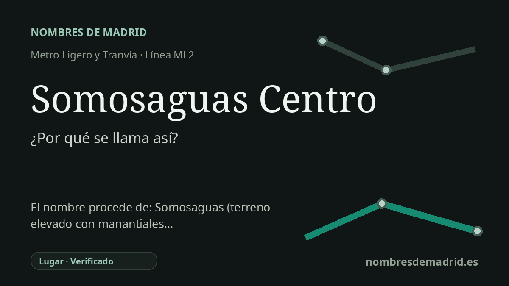

Publicado el · Investigación de Nombres de Madrid · Cómo verificamos cada origen · 8 fuentes consultadas
Respuesta rápida
Somosaguas Centro toma su nombre de la zona de Somosaguas, en Pozuelo de Alarcón. El antiguo topónimo ya aparece documentado en el Madrid medieval y combina una palabra relativa a un lugar alto con aguas, acorde con un paisaje conocido por fuentes y manantiales.
La historia del nombre
Somosaguas Centro es un nombre de transporte funcional: identifica la parada de la ML2 que sirve la parte central del ámbito de Somosaguas, en Pozuelo de Alarcón. La Comunidad de Madrid sitúa la estación en el eje de la M-502, en la zona sur del Parque Empresarial La Finca y comunicada por pasarela peatonal con el Zoco de Pozuelo.
El nombre antiguo que hay detrás de la parada es Somosaguas. Su primer elemento pertenece a la familia romance antigua de somo, voz que la RAE deriva del latín summum y define como palabra desusada para la cima o el punto más alto de los montes. Un artículo lingüístico del Boletín de la Real Academia Española trata los nombres madrileños Somosierra y Somosaguas como ejemplos de esa familia y señala la forma medieval somas aquas en el Fuero de Madrid.
Eso hace que la explicación habitual, 'aguas altas' o 'aguas del lugar alto', sea algo más que una conjetura moderna, aunque no sea posible fijar con certeza el referente medieval en un manantial conservado. Pozuelo ha estado asociado desde antiguo a pozos y manantiales, y la historia local recuerda una desaparecida Fuente de Somosaguas cerca del antiguo camino de Pozuelo a Húmera, con agua ferruginosa y algo de mineral de cobre.
Somosaguas también aparece en la historia medieval de Pozuelo. La página histórica del Ayuntamiento indica que el Pozuelo primitivo comprendía las aldeas de Pozuelo y Húmera y los caseríos de San Juan de Somosaguas y San Pedro de Meaque; estos dos últimos se despoblaron durante las luchas fratricidas entre Pedro I y Enrique II en el siglo XIV. En época contemporánea, el nombre pasó a la geografía residencial, universitaria, empresarial y de transporte.
El nombre de la estación como tal data de la puesta en servicio de la ML2 el 27 de julio de 2007. No se ha encontrado una denominación anterior de la parada. La etimología debe considerarse verificada en su origen general, pero conviene no cargar la explicación con sucesos ajenos al nombre: los asesinatos de los Urquijo de 1980 ocurrieron en Somosaguas y forman parte de la memoria mediática de la zona, pero no dieron nombre a la estación.